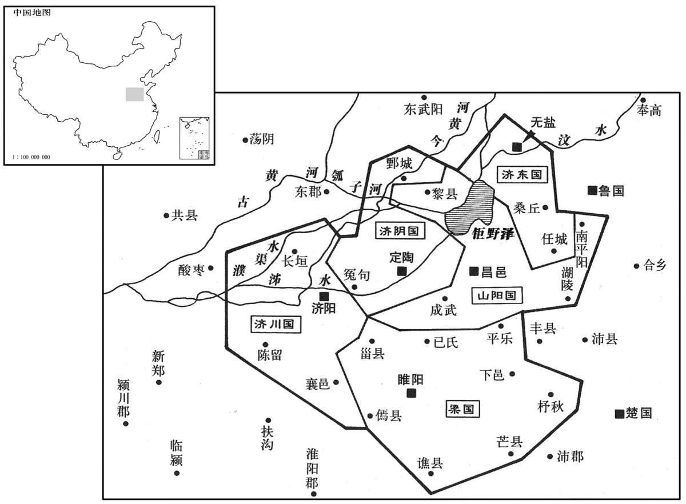
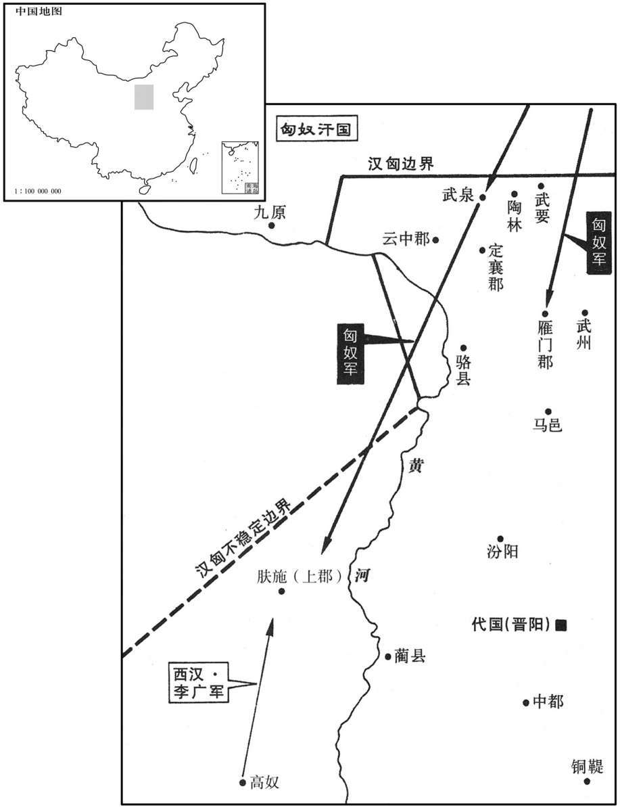

公元前144年资治通鉴：本年记事、原文与白话对照
按原书编年位置阅读；追叙和史论不等于本年发生的事件。白话采用所据译本，缺译不以生成译文补齐。
卷16 · 本年记事
公元前144年 · 汉孝景皇帝中六年
中六年〔（丁西、前一四四）〕
本年事件索引（现代整理）

本年形势与背景参考图
冬，十月，梁王来朝，上疏欲留；上弗许。〔褚少孙曰：诸侯王朝见天子，汉法凡当四见耳：始到，入，小见。到正月朔旦，奉皮荐璧玉贺正月，法见。后三日，为王置酒，赐金钱财物。后二日，复入小见，辞去。凡留长安，不过二十日。小见者，燕见于禁门内，饮于省中。〕王归国，意忽忽不乐。〔乐，音洛。〕
冬季，十月，梁王来京朝见，给景帝上书想留居长安；景帝不同意。梁王返回封国，心情郁郁不乐。
十一〔【章：乙十一行本“一”作“二”；本同。】〕月，改诸廷尉、将作等官名。〔时改廷尉为大理，将作少府为大匠，奉常为太常，典客为大行令，长信詹事为长信少府，将行为大长秋，主爵中尉为都尉。〕
十一月，景帝下诏，更改廷尉、将作少府等官名。
春，二月，乙卯，上行幸雍，郊五畤。〔畤，音止。〕
春季，二月，乙卯（初一），景帝亲临雍地，在祭祀天地五帝的处所祭天。
三月，雨雪。
三月，降雪。
夏，四月，梁孝王薨。窦太后闻之，哭极哀，不食，曰：“帝果杀吾子！”帝哀惧，不知所为；与长公主计之，乃分梁为五国，尽立孝王男五人为王：买为梁王，明为济川王，彭离为济东王，定为山阳王，不识为济阴王；〔梁仍都睢阳。济川国在陈留、东郡之间。济东国后入汉为大河郡，后又为东平国。山阳国即山阳郡。济阴国即济阴郡。济，子礼翻。〕女五人皆食汤沐邑。奏之太后，太后乃说，为帝加一餐。〔说，读曰悦。为，于伪翻。〕孝王未死时，财以巨万计，及死，藏府余黄金尚四十余万斤，〔藏，徂浪翻。〕他物称是。〔称，尺证翻。〕
夏季，四月，梁孝王去世。窦太后听到消息，哭得极其悲哀，不进饮食，说：“皇帝果然杀了我儿子！”景帝悲哀恐惧，不知怎么办才好；与姐姐长公主商议，于是把梁国分为五国，把梁孝王的五个儿子全都封为诸侯王：刘买为梁王，刘明为济川王，刘彭离为济东王，刘定为山阳王，刘不识为济阴王；梁孝王的五个女儿也都封给汤沐邑。景帝把这一决定禀告窦太后，太后才高兴起来，为景帝这一做法而吃了一顿饭。梁孝王没死的时候，有数以万万计的财产，他死后，梁国府库中剩余的黄金还有四十多万斤，其他财物的价值也与此相当。
上既减笞法，〔见上卷元年。〕笞者犹不全；乃更减笞三百曰二百，笞二百曰一百。又定棰令：〔师古曰：棰，策也，所以击者也。棰，止蕊翻。〕棰长五尺，〔长，直亮翻。〕其本大一寸，竹也；末薄半寸，皆平其节。当笞者笞臀；〔如淳曰：然则先时笞背也。臀，徒门翻。〕毕一罪，乃更人。〔更，工衡翻。〕自是笞者得全。然死刑既重而生刑又轻，民易犯之。〔易，以豉翻。〕
景帝减少了对罪犯的笞打次数之后，受笞刑的人还难保全生命；就再崐次减少笞刑，该笞打三百下的，减为笞打二百，该笞打二百下的，减为笞打一百。又制定了实施笞刑的法令：用于打人的笞杖，长为五尺，用竹子做成，根部手握之处，竹管的直径为一寸；末梢为半寸薄的竹片，竹节全要磨平。被判处笞刑的人，笞打他的臀部；一个罪人打完之后，才更换行刑的人。从此以后，受笞刑的人就得以保全了。但这样一来，死刑很重而不到死刑的其他惩罚又很轻，百姓就把违法犯罪看得很轻淡了。
六月，匈奴入雁门，至武泉，入上郡，取苑马；〔雁门有句注之险。如淳曰：汉仪注：太仆牧师诸苑三十六所，分布北边、西边，以郎为苑监，官奴婢三万人，养马三十万匹。师古曰：武泉，云中县也。养鸟兽通名曰苑，故谓牧马处曰苑。食货志：景帝始造苑马以广用。〕吏卒战死者二千人。陇西李广为上郡太守，尝从百骑出，〔【章：甲十五行本“出”下有“卒”字；乙十一行本同；张校同。】〕遇匈奴数千骑，见广，以为诱骑，〔诱骑者，见少以诱敌。诱，音酉；下同。〕皆惊，上山陈。〔师古曰：为陈以待广也。陈，读曰阵；下同。〕广之百骑皆大恐，欲驰还走。广曰：“吾去大军数十里，今如此以百骑走，匈奴追射我立尽。〔射，而亦翻；下同。〕今我留，匈奴必以我为大军之诱，必不敢击我。”广令诸骑曰：“前！”未到匈奴阵二里所，止，令曰：“皆下马解鞍！”其骑曰：“虏多且近，即有急，柰何？”广曰：“彼虏以我为走；令〔【章：乙十一行本“令”作“今”；孔本同；态校同。】〕皆解鞍以示不走，用坚其意。”〔师古曰：示以坚牢，令敌意知之。〕于是胡骑遂不敢击。有白马将出，护其兵；〔师古曰：将之乘白马者也。护，谓监视之。将，即亮翻。〕李广上马，与十余骑奔，射杀白马将而复还，至其骑中解鞍，令士皆纵马卧。是时会暮，胡兵终怪之，不敢击。夜半时，胡兵亦以为汉有伏军于旁，欲夜取之，胡皆引兵而去。平旦，李广乃归其大军。
六月，匈奴攻入雁门郡，直到武泉县，并攻入上郡，抢去了官府牧马场的马匹；汉军将士二千人战死。陇西人李广担任上郡太守，曾率领一百名骑士出行，遇到几千匈奴骑兵。匈奴人看见李广的小队伍，以为是汉军大部队派出的诱兵，都吃了一惊，占据高山摆开阵势。李广所率领的一百名骑兵都很害怕，想驰马逃跑回去，李广制止说：“我们离开大军数十里远，现在，如果就靠这一百骑兵的队伍逃跑，匈奴人追杀射击，我们马上就完了。现在我们留在这里，匈奴人必定把我们看成大军的诱敌队伍，一定不敢进攻我们。”李广命令骑兵们说：“前进！”来到距离匈奴阵地约有二里的地方，停止下来，李广命令说：“都下马解下马鞍！”他的骑兵说：“敌人很多，而且离我们很近，如果出现紧急情况，怎么办？”李广说：“敌人估计我们会逃跑；我命令都解下马鞍，向他们表示不逃跑，用这个办法来坚定他们认为我们是诱敌部队的想法。”于是匈奴骑兵便 真的不敢进攻。有一位骑白马的匈奴将领出阵来，监护他的军队，李广上马，和十多个骑兵奔向前去，射死了匈奴的白马将军，又返回来，到达他的百骑阵营中，解下马鞍，命令战士们放开战马，卧地休息。这时，正好是黄昏，匈奴骑兵一直对李广部队的行为觉得奇怪，不敢进攻。到了半夜时分，匈奴军队仍然认为附近有埋伏的汉朝大军，想夜间袭击他们，便都领兵撤走了。到黎明时，李广才回到他的大军营垒。

秋，七月，辛亥晦，日有食之。
秋季。七月，辛亥晦（二十九日），出现日食。
自郅都之死，长安左右宗室多暴犯法。上乃召济南都尉南阳宁成为中尉。其治效郅都，其廉弗如；然宗室、豪杰皆人人惴恐〔惴，之瑞翻。〕
自从郅都死后，长安及附近的宗室 皇族有许多人凶暴犯法。景帝就征召济南都尉南阳人宁成出任中尉。宁成的治政仿效郅都，但清廉不及郅都，然而宗室皇族、地方豪强人人都恐惧不安。
城阳共王喜薨。〔共王喜，文帝前四年嗣父章爵为王，八年徙王淮阳，后四年复还城阳，至是而薨。共，读曰恭。〕
城阳王刘喜去世。